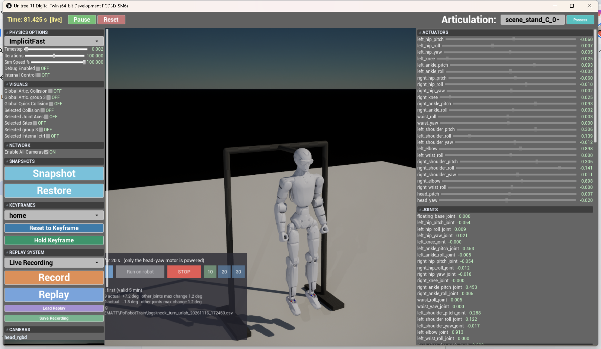
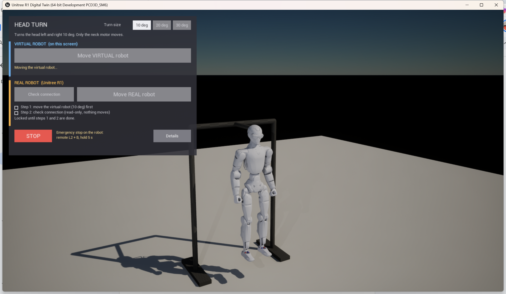
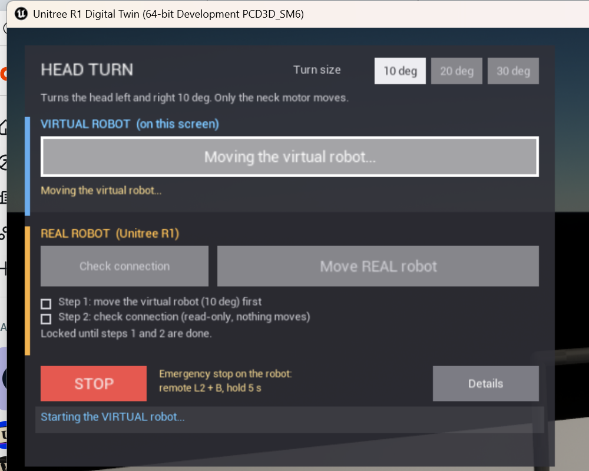
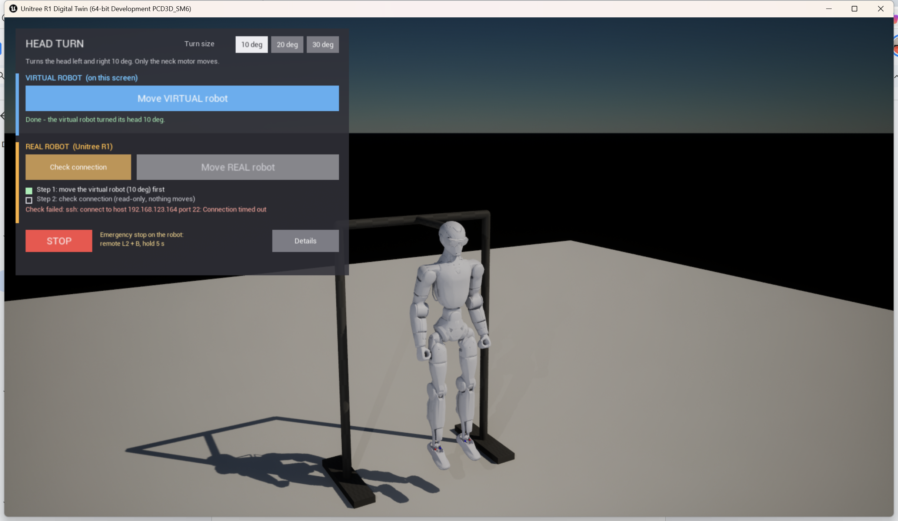

Behaviour panel redesign (Unreal twin)
2026-11-16 · UE 5.8.4 standalone game, level R1_Stand, 1600×900 at 150 % display scaling.
Before

After
- URLab debug panels hidden on start (Details or Tab shows them and the raw service output).
- VIRTUAL ROBOT section (blue): one button, safe, nothing real moves.
- REAL ROBOT section (orange): Check connection (read-only) and Move REAL robot, with a two-step checklist that says why the robot button is locked.
- Plain-language status per section; STOP and the remote e-stop reminder kept.
- Click feedback: hovered buttons brighten with an outline, the clicked button flashes white and sinks, the running button's label changes ("Moving the virtual robot...", "Checking..."), and a message bar confirms each click. Clicking a locked button says why it is locked.
- Fix: panel clicks were ignored. The follow camera turned HUD click events off, and URLab's widget switches input modes, so the panel now reads left clicks from a Slate input pre-processor and hit-tests its own buttons.



Not verified
- A real-robot run was not started: the robot (192.168.123.164) was unreachable.